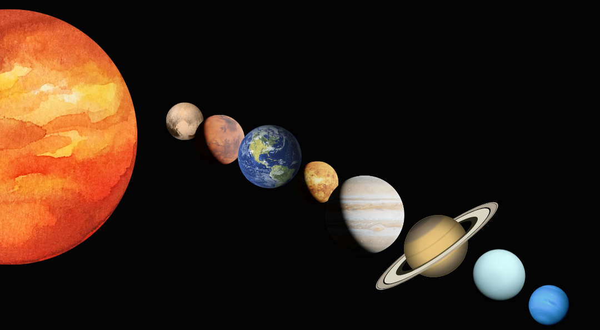
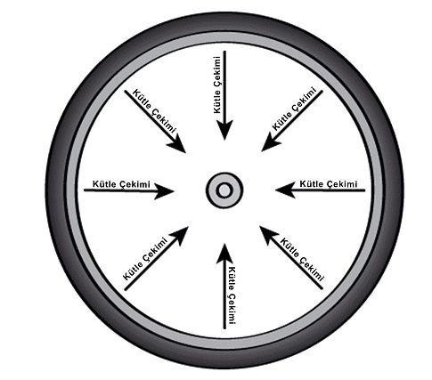
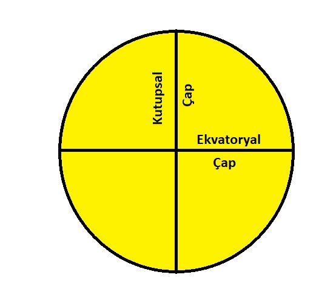
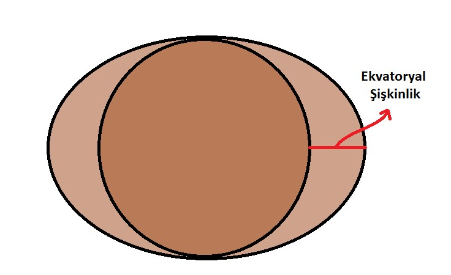

Gezegenler, kütle çekiminden dolayı yuvarlaktır.Gezegenin kütle çekimi, her taraftan, her şeyi, eşit bir
şekilde kendi merkezine doğru çeker. Tıpkı bisiklet jantlarında tellerinin jantı merkeze doğru
çekerek düzgün tutması gibi. Yani kütle çekimi her tarafı eşit çekim uyguladığı için gezegenin şeklini
üç boyutlu bir küre haline getirir.
Büyük, Küçük Ama Hepsi Yuvarlak
Güneş Sistemi’nde birçok açıdan birbirinden farklı sekiz tane gezegen var. Hepsi de farklı
boyutlarda ve Güneş’e uzaklıkları birbirinden farklı. Bazıları küçük ve kayalardan, bazıları ise
büyük ve gazlardan oluşur. Fakat hepsi de yuvarlaktır. Peki neden? Neden şekilleri küp, piramit ya da
disk şeklinde değil?
Gezegenlerin oluşması için önce boşluktaki maddelerin birbiri ile çarpışması ve yığılmaya başlaması
gerekir. Bir süre sonra kütle çekimini oluşturacak miktarda madde birikir. Bu çekim, uzayda
maddeleri bir arada tutan kuvvettir. Gezegen yeterli büyüklüğe ulaştığında, yıldızın çevresinde
dolandığı yörüngesini temizlemeye başlar. Kütle çekimini kullanarak uzaydan maddeleri toparlar.

Gezegelerin oluşması için önce boşluktaki maddelerin birbiri ile çarpışması ve yığılmaya başlaması
gerekir. Bir süre sonra kütle çekimini oluşturacak miktarda madde birikir. Bu çekim, uzayda maddeleri
bir arada tutan kuvvettir. Gezegen yeterli büyüklüğe ulaştığında, yıldızın çevresinde dolandığı
yörüngesini temizlemeye başlar. Kütle çekimini kullanarak uzaydan maddeleri toparlar.
Peki Neden Hepsi Mükemmel Bir Küre?
Güneş sistemimizdeki bazı gezegenler diğer gezegenlere kıyasla daha yuvarlaktır. Merkür ve Venüs en
yuvarlak şekle sahiptir. Bu gezegenler neredeyse mükemmel bir küre şeklindedirler, tıpkı bir bilye gibi.
Fakat bazı gezegenler o kadar da mükemmel bir küre şekline sahip değildir.
Satürn ve Jüpiter merkez kısımlarında biraz daha kalındır çünkü kendi etraflarında daha hızlı dönerler.
Bu da bu gezegenlerin ekvator çevresinde bir şişkinlik oluşturur. Peki bu neden oluyor? Bir cisim kendi
etrafında döndüğünde, tıpkı gezegenlerin döndüğü gibi, dış kenarları iç tarafına yetişmek için daha
hızlı döner. Bu, bir tekerlek, DVD veya fan gibi dönen her cisim için geçerlidir. Cisimlerin dış
kenarları daha uzağa ve daha hızlı hareket etmek zorundadırlar.

Bir gezegenin ekvatoru boyunca, kuzey ve güney kutuplarının tam ortası, kütle çekimi ile kenarlarını
içeriye doğru çeker ve gezegeni bir arada tutar. Gezegenler döndükçe cisimler bir lastikteki çamur gibi
dışa doğru fırlamak ister. Satürn ve Jüpiter hızlı döner. Bu dönüş sırasında ekvator bölgesi diğer
bölgelere yetişmek için daha hızlı döner bu da ekvator kısmında şişkinlik oluşturur. Biz buna fazladan
genişlemiş ekvatoryal şişkinlik diyoruz.

Satürn’ün şişkinliği Güneş Sistemindeki birçok gezegenden daha fazladır. Eğer kutuptan kutba olan çapı ve
ekvator çapını karşılaştırırsak aynı sonuç çıkmaz. Satürn %10,7 merkezden daha kalındır. Jüpiter ise
%6,9 daha kalındır.
Bilye gibi mükemmel bir yuvarlaklığa sahip olmak yerine, üzerine bastırılmış bir basketbol topu şekline
sahiptirler.
Peki Diğer Gezegenler?
Dünya ve Mars diğer gaz devlerine oranla daha küçüklerdir ve onlar kadar kendi etraflarında hızlı
dönmezler. Bu gezegenlerde mükemmel küre şekline sahip olmasalar da Satürn ve Jüpiter’e göre daha
yuvarlaklardır. Dünya merkezde %0.3, Mars ise %0,6 daha kalındır. Merkezde %1 bile kalın olmadıkları
için rahatça yuvarlaklardır diyebiliriz. Uranüs ve Neptün ise iki değerin arasındadır. Uranüs %2,3,
Neptün ise %1,7 merkezden daha kalındır. Tam olarak mükemmel yuvarlak değillerdir fakat oldukça
yakınlardır.
Kaynak: NASA